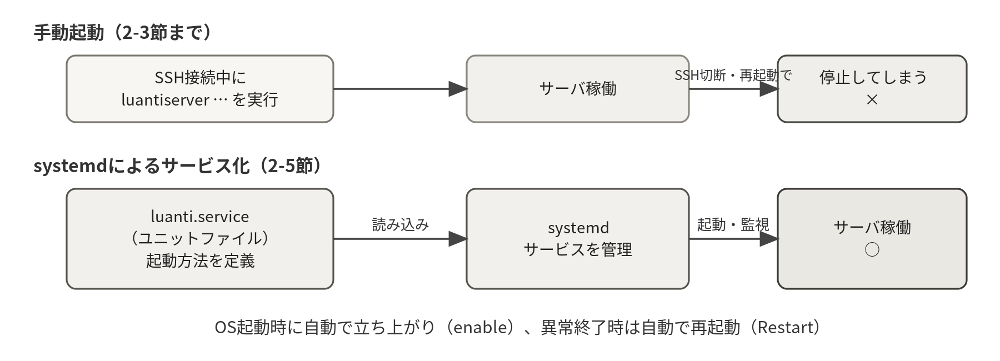
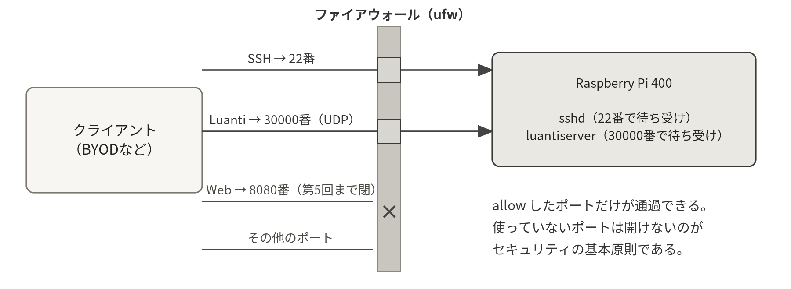
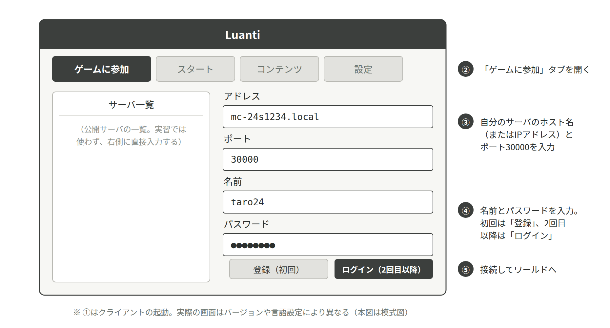

Luanti（ゲームサーバ）を導入し、OS起動時に自動で立ち上がるサービスとして稼働させる。自分のサーバに接続できること、他の学生のサーバと相互に接続できることを確認する。
タイムテーブル（180分）
| 時間 | 内容 |
|---|---|
| 20分 | ミニ講義：パッケージ管理／プロセスとサービス／ポートとファイアウォール |
| 30分 | aptによるシステム更新とLuantiのインストール |
| 40分 | 初回起動・ワールド生成・luanti.confの設定 |
| 40分 | systemdによるサービス化、ファイアウォール設定 |
| 30分 | 相互接続演習：自分と他の学生のサーバへの接続確認 |
| 20分 | 確認項目の達成チェック |
この回の流れ
- aptでシステムを更新する10分
- Luantiを入れるパッケージ名の判定つき 20分
- 手動で起動しワールドを作る20分
- luanti.confを書くviの実戦投入 20分
- systemdでサービス化するこの回の山場 30分
- ファイアウォールを開ける順番に注意 10分
- 相互接続を試す30分
2-1パッケージ管理（apt）
いま何をするか：ソフトウェアを入れる前に、パッケージの一覧（カタログ）とインストール済みパッケージを最新にしておく。
sudo apt update # パッケージ情報（カタログ）の更新
sudo apt upgrade -y # インストール済みパッケージの更新Linuxでは、ソフトウェアを「パッケージ」として管理する。Debian系ではaptコマンドを使う（Red Hat系ではdnf/yum）。依存関係の解決や更新をまとめて面倒みてくれるのがパッケージマネージャの利点である。コマンドの先頭に付けたsudoは、「管理者（root）権限でコマンドを実行する」ためのコマンドである。システムに変更を加える操作にはsudoが必要になる。詳しくは第3回で学ぶ。
update と upgrade は名前が似ているが役割が違う。update はカタログを取り直すだけで、ソフトウェア自体は新しくならない。実際に新しくするのが upgrade である。この2つはいつもこの順で実行する。（詳しくは第1章 1.9 update と upgrade は別の操作である）
2-2Luantiのインストール
本実習の題材であるLuantiは、エンジン本体（サーバプログラム）と、その上で動くゲーム（本実習ではMinetest Game）が分かれている構成が特徴である。両方をaptで一度にインストールできる。ただし、パッケージ名にはOSのバージョンによって新名（luanti系）と旧名（minetest系）の2パターンがある。まず自分の環境がどちらかを確かめよう。（背景は第11章 11.2 Luantiというソフトウェア）
いま何をするか：自分のRaspberry Pi OSが新名（luanti系）と旧名（minetest系）のどちらのパッケージを持っているかを、検索して見分ける。
apt-cache search luanti
（luanti-server などが表示されれば「新名パターン」）
（何も表示されなければ「旧名パターン」。下の表で読み替える）| 項目 | 新名パターン（luanti系） | 旧名パターン（minetest系） |
|---|---|---|
| インストール | luanti-server luanti-game-minetest | minetest-server minetest-data |
| サーバ本体 | /usr/games/luantiserver | /usr/games/minetestserver |
| ゲームの場所 | /usr/share/luanti/games/minetest_game | /usr/share/games/minetest/games/minetest_game |
| gameid | minetest | minetest_game |
いま何をするか：エンジン本体とゲームデータをまとめて入れ、サーバ本体がどこに置かれたかを which で確かめる。旧名パターンの人は上の表のとおり読み替える。
sudo apt install -y luanti-server luanti-game-minetest
which luantiserver
/usr/games/luantiserver # サーバ本体の場所を確認しメモしておく※ この指導書のコマンドはすべて新名パターンで表記する。旧名パターンの人は上の表のとおり読み替えること。自分の環境の4つの値（パッケージ名・本体の場所・ゲームの場所・gameid）を実験記録にメモしておくと、この後のユニットファイル作成や第5回のコンテナ化で迷わない。また、パッケージ付属のサービス（luanti-server）は導入直後から自動で動き始め、30000番ポートを先に取ってしまう。次節に進む前に必ず sudo systemctl disable --now luanti-server（旧名なら minetest-server）で停止・無効化しておくこと。なお /usr/games/luantiserver の実体は本体を呼び出す短いシェルスクリプトで、Debian独自の既定（ログの出力先など）を付け足している。次節の --logfile "" はそれを打ち消すための指定である。
インストールしただけで、実はもうLuantiが動き始めている。パッケージ付属のサービス luanti-server（旧名なら minetest-server）が自動で起動し、30000番ポートを先に押さえてしまうためである。この状態で次節の手動起動を行うと Address already in use、Bind failed、Failed to setup server ports のいずれかで即座に終了する。先に進む前に sudo systemctl disable --now luanti-server を実行して、停止と自動起動の解除を済ませておくこと。これを忘れると、2-5節でサービス化したあとも「自分が作ったほうのサーバが動かない」という分かりにくい形でつまずく。
which luantiserver（旧名ならwhich minetestserver）がパスを1行返す- 自分の環境の4つの値（パッケージ名・本体の場所・ゲームの場所・gameid）を実験記録に控えた
systemctl status luanti-serverがinactive (dead)かつdisabledになっている
2-3初回起動とワールドの生成
サーバ用のディレクトリを作り、まずは手動でサーバを起動してみる。--world はワールドの保存先、--gameid は動かすゲーム、--config は設定ファイルの指定である。なお --gameid には対応表の値を使う（旧名パターンなら minetest_game）。
--logfile "" は、Debianのパッケージが既定でログを /var/log/luanti/ に書こうとして権限エラー（Permission denied）で止まるのを避けるための指定で、ファイルへのログを切り、画面（サービス化後は journald）にだけ出す。この指定はユニットファイルの ExecStart にも同じく付ける。
いま何をするか：作業用ディレクトリと空の設定ファイルを用意し、サーバを一度だけ手で起動して、ワールドが生成されるところを自分の目で見る。
mkdir ~/server && cd ~/server
touch luanti.conf # 設定ファイル（今は空でよい）
luantiserver --world ~/server/world --gameid minetest --config ~/server/luanti.conf --logfile ""
...
ACTION[Main]: World at [/home/ユーザ名/server/world]
ACTION[Main]: Server for gameid="minetest" listening on [::]:30000. # 版により 0.0.0.0:30000 と出る。どちらも正常「listening on ... :30000」（[::]:30000 または 0.0.0.0:30000）と表示されれば、サーバは30000番ポート（UDP）で接続を待ち受けている。初回起動でworldディレクトリ（ワールドデータ）が自動生成される。
プロンプトが返ってこないのはフリーズではなく、サーバが前面で動き続けている正常な状態である。Ctrl+Cで停止し（ワールドは保存される）、ls でworldディレクトリができていることを確認しよう。
起動した直後に Permission denied で終わるときは、--logfile "" を書き忘れていないか確かめる。ダブルクォート2つの間には何も入れない（空文字列を渡す指定である）。Address already in use、Bind failed、Failed to setup server ports のいずれかで終わるときは、2-2節の sudo systemctl disable --now luanti-server がまだ済んでいない。どちらのエラーも、原因は自分の打ち間違いではなくパッケージ既定の設定にある。
- 画面に
listening onで始まり:30000で終わる行が出た（0.0.0.0:30000または[::]:30000。どちらも正常） - Ctrl+Cで停止したあと
ls ~/serverにworldとluanti.confがある ls ~/server/worldの中にファイルが生成されている
2-4luanti.confの設定
サーバの設定は luanti.conf ファイルで管理される。viで開き、以下の内容を記述しよう（viの実戦投入である）。注意：この設定ファイルは行頭の#だけがコメント扱いで、行の途中に#を書くと値の一部として読まれてしまう。（設定ファイルの構造は第11章 11.5 データと設定の構造）
いま何をするか：vi ~/server/luanti.conf で設定ファイルを開き、サーバ名・最大人数・管理者名などを書き込む。自分のプレイヤー名 や ○○ のような色付きで示した箇所は、自分の値に置き換えて入力する。
# サーバ名（自由に付けよう）と、接続時に表示されるメッセージ
server_name = ○○のサーバ
motd = ようこそ！
# 最大同時接続数
max_users = 5
# 管理者となるプレイヤー名（第3回で使う）
name = 自分のプレイヤー名
# 空パスワードでの登録を禁止／TNTを有効化（第3回の負荷実験で使う）
disallow_empty_password = true
enable_tnt = true※ 設定変更のたびにサーバの再起動が必要である。「設定ファイルを編集→サービスを再起動→動作確認」はサーバ運用の基本サイクルであり、この後何度も繰り返すことになる。
max_users = 5 # 最大5人 のように行の途中にコメントを書いてはいけない。luanti.conf が値として読むのは = の右側すべてなので、この書き方だと最大人数が「5 # 最大5人」という壊れた値になる。コメントは必ず行頭の # から始まる独立した行にする。同じ制約はこの後のユニットファイルにもある。設定が効いていないと感じたら、まずこの点を疑うとよい。
cat ~/server/luanti.confで、書いたはずの行がすべて表示されるname =の行が、自分がクライアントで使うプレイヤー名と一致している- 値を書いた行の途中に
#が混ざっていない
2-5systemdによるサービス化
ここまでの起動方法には問題がある。SSHを切断するとサーバも止まってしまい、Raspberry Piを再起動したら手動で立ち上げ直さなければならない。
世の中のサーバは「OSが起動すれば勝手にサービスが立ち上がり、落ちたら自動で復旧する」ように構成されている。それを担うのがsystemdであり、サービスの定義は「ユニットファイル」に記述する。（背景は第6章 6.2 systemdとサービス、プロセスそのものは第6章 6.1 プロセスとは）

viでユニットファイルを作成する（/etc 以下はシステムの設定領域なのでsudoが必要）。
いま何をするか：systemdがサービスを読み込む場所にユニットファイルを新規作成する。存在しないファイル名なので、viは空の画面で開く。
sudo vi /etc/systemd/system/luanti.serviceいま何をするか：「誰が」「どこで」「何を」起動するのかをsystemdに伝える定義を書く。ユーザ名 は4か所に現れるので、すべて自分のユーザ名に直すこと。
[Unit]
Description=Luanti Game Server
After=network-online.target
Wants=network-online.target
[Service]
User=ユーザ名
WorkingDirectory=/home/ユーザ名/server
ExecStart=/usr/games/luantiserver --world /home/ユーザ名/server/world --gameid minetest --config /home/ユーザ名/server/luanti.conf --logfile ""
Restart=on-failure
[Install]
WantedBy=multi-user.target記述内容の意味：User はサービスを実行するユーザ、WorkingDirectory は実行時のディレクトリ、ExecStart が起動コマンド（2-3節で手動実行したものと同じ。絶対パスで書く）、Restart=on-failure は異常終了時の自動再起動、WantedBy=multi-user.target が「OS起動時に立ち上げる」指定である。
なお、User・WorkingDirectory・ExecStart の3行に書かれた「ユーザ名」は、すべて自分のユーザ名に置き換えること。ExecStart は1行で書く。ユニットファイルも行中コメントは書けない（コメントは行頭のみ）。
「ユーザ名」の置き換え漏れは、この回で最も多い失敗である。User= に1か所、WorkingDirectory= に1か所、ExecStart= の --world と --config のパスに1か所ずつ、合わせて3行・計4か所ある。1か所でも残っていると systemctl status luanti が failed になり、Failed to determine user credentials や No such file or directory といったメッセージが出る。grep ユーザ名 /etc/systemd/system/luanti.service を実行して何も表示されなければ、置き換えは完了している。
もう1つ多いのが daemon-reload の忘れである。ユニットファイルを書き換えても、sudo systemctl daemon-reload を実行しなければsystemdは古い内容のまま動き続ける。「直したはずなのに症状が変わらない」ときは、まずdaemon-reloadを疑うこと。正しい順番は「ファイルを編集する、daemon-reload、restart、status で確認」である。status で原因が読み取れないときは journalctl -u luanti -n 30 で直近のログを見るとよい。（コマンドの一覧は第6章 6.6 systemctl リファレンス、第6章 6.7 journalctl リファレンス）
作成したら、systemdに読み込ませてサービスを起動する。
いま何をするか：書いたユニットファイルをsystemdに読み込ませ、起動して状態を確かめ、最後にOS起動時の自動起動を有効にする。
sudo systemctl daemon-reload # ユニットファイルの読み込み
sudo systemctl start luanti # サービスの起動
sudo systemctl status luanti # 状態確認
● luanti.service - Luanti Game Server
Active: active (running) ... # ←これが出れば稼働中
sudo systemctl enable luanti # OS起動時の自動起動を有効化本当に自動起動するか、疑って確かめるのがエンジニアである。sudo reboot でRaspberry Piを再起動し、SSHで接続し直して systemctl status luanti が active (running) になることを確認しよう。
systemctl status luantiがactive (running)と表示されるsystemctl is-enabled luantiがenabledを返すsudo rebootのあとSSHで入り直しても、何もしないうちからactive (running)である
2-6ファイアウォールの設定
サーバはポートという番号付きの窓口で通信を受け付ける。SSHは22番（TCP）、Luantiは30000番（UDP）を使う。ファイアウォールは「どの窓口を開けるか」を制御する仕組みであり、Ubuntu/Raspberry Pi OSではufwコマンドで設定する。（背景は第7章 7.4 TCP/UDPとポート番号、第7章 7.5 ファイアウォール）

いま何をするか：ufwを入れ、必要な窓口（SSHの22番とLuantiの30000番）を開けてから有効化する。許可を先、enable は最後という順番が命である。
sudo apt install -y ufw
sudo ufw allow 22/tcp # SSH（★これを忘れて有効化すると自分が締め出される！）
sudo ufw allow 30000/udp # Luanti（UDPである点に注意）
sudo ufw enable # ファイアウォールの有効化
Command may disrupt existing ssh connections. Proceed with operation (y|n)? y
Firewall is active and enabled on system startup
sudo ufw status
Status: active
To Action From
-- ------ ----
22/tcp ALLOW Anywhere
30000/udp ALLOW Anywhere
22/tcp (v6) ALLOW Anywhere (v6)
30000/udp (v6) ALLOW Anywhere (v6)sudo ufw enable では英語で確認を聞かれて止まる。確認を聞かれたら、22/tcp を許可済みであることを確かめてから y を押す。（ufw の操作の一覧は第7章 7.13 ufw コマンドリファレンス）
※ 順番が重要である。SSHの許可（22/tcp）より先に enable すると、自分のSSH接続まで遮断され、サーバに入れなくなる。実務でも定番の事故なので、この順番を体で覚えること。万一締め出されたときは、モニタとキーボードを接続してローカルログインし、sudo ufw disable で一旦無効化してから設定をやり直す（救済用モニタを教卓に用意している）。
Luantiのポートは 30000/udp であって 30000/tcp ではない。ここを間違えると、SSHは通るのにクライアントからだけ繋がらないという、原因の見えにくい状態になる。sudo ufw status の出力に 30000/udp と表示されているかを必ず目で確かめること。間違えて 30000/tcp を開けてしまった場合は sudo ufw delete allow 30000/tcp で消してから開け直す。
sudo ufw statusの1行目がStatus: activeである- 一覧に
22/tcpと30000/udpの両方がALLOWで出ている - この状態でSSHを一度切断し、もう一度接続できる（締め出されていない）
2-7演習：サーバの相互接続
いよいよ自分のワールドに入る。クライアント側（BYOD）の手順は次のとおりである。（クライアントとサーバの関係は第11章 11.1 クライアント／サーバモデル）
| 手順 | 操作 |
|---|---|
| ① | Luantiクライアントを起動する（注意事項2.5節でインストール済み） |
| ② | 「ゲームに参加」（Join Game）タブを開く |
| ③ | アドレスに自分のサーバのホスト名（mc-学籍番号.local）またはIPアドレス、ポートに 30000 を入力する |
| ④ | 名前とパスワードを入力し、初回は「登録」（Register）ボタンを押す（2回目以降は「ログイン」）。登録時に入力した名前とパスワードで、このサーバ専用のアカウントが作られる |
| ⑤ | ワールドに入れれば構築成功。luanti.confのmotdが表示されることも確認する |
※ 重要：luanti.conf の name に書いた名前（管理者）は、最初にその名前で登録した人のものになる。サーバを公開したら、真っ先に自分自身がその名前で登録すること。また、ここで使うパスワードは他のサービスのものを使い回さないこと。長さは12文字以上を目安に、推測されにくいものを使う。

自分のサーバに入れたら、近くの人とホスト名（またはIPアドレス）を交換し、お互いのサーバを行き来してみよう。近くに相手がいない場合は、教員のデモサーバを相手にしてよい（アドレスは当日掲示する）。
接続できない場合は、次の順に確認する。
pingで相手のサーバに届くかsystemctl statusで相手のサーバが稼働しているかufw statusでポートが開いているか
この「切り分け」の手順こそネットワークトラブル対応の基本である。（調査コマンドの使い分けは第7章 7.7 ネットワークの調査と転送）
いま何をするか：切り分けの1段目として、相手のサーバまでネットワークが通っているかだけを確かめる。応答が続くのでCtrl+Cで止める。
ping mc-24s5678.local # 相手のサーバに届くか確認（Ctrl+Cで停止）確認項目
達成したら日時・実行コマンド・結果を実験記録に残すこと。
- systemctl status luanti で active (running) を確認した
- sudo reboot 後もサービスが自動起動することを確認した
- 自分のワールドに接続できた／他の学生が自分のサーバに接続できた
発展課題
- luanti.confの他の設定項目を調べてみよう。
creative_mode = true（クリエイティブモード）、fixed_map_seed（地形の種）、time_speed（時間の速さ）などを変えると、まったく違うサーバになる。 server_descriptionを設定して、接続画面での見え方を工夫してみよう。journalctl -u luantiでサービスのログを眺めてみよう（第3回で本格的に扱う）。